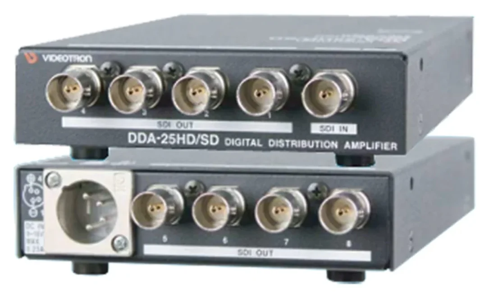

何箇所に届ける？
同じ映像を送るモニター・収録機と台数を整理します。
映像をつなぐ・整える ↗EQUIPMENT / 74
SDI分配器
ひとつのSDI映像を、会場の複数箇所へ。
KEY SPECIFICATIONS

画像を大きく見る ＋01 / ROLE & FLOW
02 / BEFORE YOUR BRIEF
同じ映像を送るモニター・収録機と台数を整理します。
各送り先のSDI端子と対応する映像形式を合わせます。HDMIへ直接接続する機器ではありません。
パッチ盤の使用と本番中の切替え予定を共有し、映像を乱さない配線・運用を決めます。
03 / CHOOSING THE RIGHT TOOL
同じカメラ映像や送出映像を、客席モニター、確認モニター、収録機などへ同時に届ける構成に。
別々の映像を選び分けるスイッチャーや、4KをHDに変換するスケーラーとは役割が異なります。DVB-ASIには製造番号ごとに出力の制限があるため、SDI用の接続をそのまま流用しません。
3G/HD-SDIでは、対になる出力の片側をパッチ盤で抜き差しすると、もう片側へCRCエラーが出る場合があります。本番中の変更を避け、4出力以内の構成ではメーカー指定のOUT1・3・5・7を使用します。メーカーは2023年3月31日生産完了、2030年3月31日メンテナンス終了予定と案内しています。貸出機の状態と代替経路も含めて手配します。メーカー同梱品はACアダプターVAC-12V01A（ケーブル長1.5m）と取扱説明書で、SDIケーブルは使用構成に合わせて別途手配します。レンタルに含む範囲はお見積りに明記します。電源スイッチはなく、電源を接続するとすぐに起動します。入力側のケーブルイコライザー特性は5CFBで3G 100m、HD 150m、SD 300mです。使用環境は0～40℃、20～80%RH（結露なし）です。
映像形式、出力先と台数、配線距離、パッチ盤の有無、使用期間、電源アダプター・ケーブル・設営の範囲をお聞かせください。本体・周辺機材・搬入出・設営・本番操作・撤去を分けて、必要な範囲を整理します。
04 / RELATED EQUIPMENT